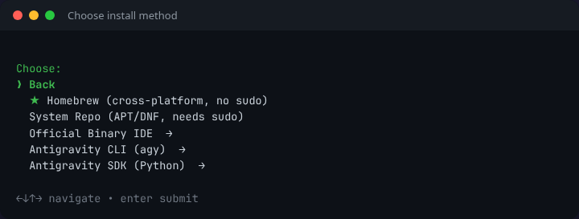
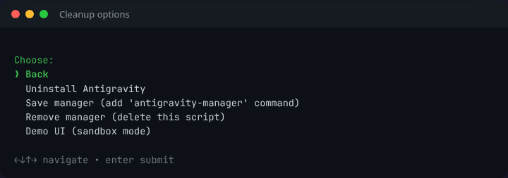

Open a terminal on your machine:
Click the button below to copy the automated installation script. This single command downloads the installer and runs it entirely in memory—no extra execution permissions required!
curl -fSsL "https://raw.githubusercontent.com/wtg-codes/agv-easy-install/main/antigravity-manager.sh" | bash
Go back to your terminal, paste the command (Ctrl + Shift + V on Linux, ⌘ + V on macOS), and press Enter.
The script detects your system and shows a simple menu. Use arrow keys to navigate and Enter to select.
💡 The script asks what you need, then auto-selects the best options for your system.
One click installs both the IDE and CLI using the best method for your system. No decisions needed!

Cross-platform, no sudo. Works on macOS and Linux.
Linux only. Auto-updates via your package manager (requires sudo).
Downloads the official standalone IDE package. No sudo required.
Installs the command-line helper tool (standalone, no IDE required).
Installs the official Python package google-antigravity via pip.

Uninstall Antigravity, save/remove the manager script, or launch Demo UI to try the installer in sandbox mode.
You're all set! You can now launch Google Antigravity from your application menu, desktop shortcut, or by typing antigravity in your terminal.
If the icons don't appear right away, you can always launch it from your terminal by typing:
antigravity
If it says "command not found", close and reopen your terminal to refresh your system path, then try again.
Where are my files?
• Workspace: ~/my-antigravity-work
• Homebrew: Managed by brew.
• System Repo (APT/DNF): Installed system-wide.
• Official Binary: Installed to ~/.local/lib/antigravity or /Applications.
Install the command-line helper tool agy directly using the command:
curl -fSsL "https://antigravity.google/cli/install.sh" | bash
Or select Antigravity CLI from the interactive installation menu.
If the installer doesn't support your system, download the standalone package manually:
These links are updated nightly by our CI pipeline.
The script automatically saved a management tool to your system! If you ever need to uninstall the IDE, switch installation types, or force an update, just open a terminal and type:
antigravity-manager
Loading source code...